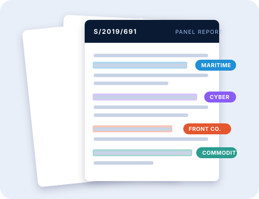
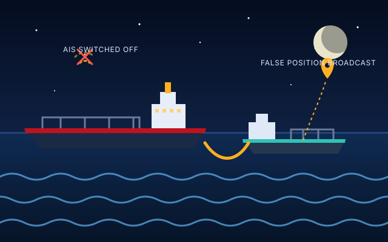

EXperts Panels On Sanctions Evasion
How are UN sanctions evaded? The UN's own experts have been documenting it.
EXPOSE turns the findings of the UN Panels of Experts into a searchable, classified record of evasion methods: from ships that go dark at sea to stolen crypto and front companies.

From long UN reports to a clear picture of evasion
The UN Security Council uses sanctions such as arms embargoes, asset freezes, travel bans and bans on commodities. To check that they work, it appoints Panels of Experts: small teams of independent specialists who investigate violations and report on them.
Their reports are rich in evidence but long and hard to compare. EXPOSE analyses them, identifies each documented evasion and classifies it by regime, year and method, so that patterns become visible to researchers, journalists, compliance officers and students.

Pick a category and see the cases
Each card opens the database already filtered to that category.

Who is behind EXPOSE
EXPOSE is run by three researchers linked to the University of Groningen. [Add two or three sentences here about your shared background and why you started the project.]
Francesco
[One line about Francesco's role and research interests.]
Irene
[One line about Irene's role and research interests.]
Ana
[One line about Ana's role and research interests.]
Have a question, a case to suggest, or a collaboration in mind?
We would like to hear from researchers, practitioners and anyone working on sanctions.
Get in touch